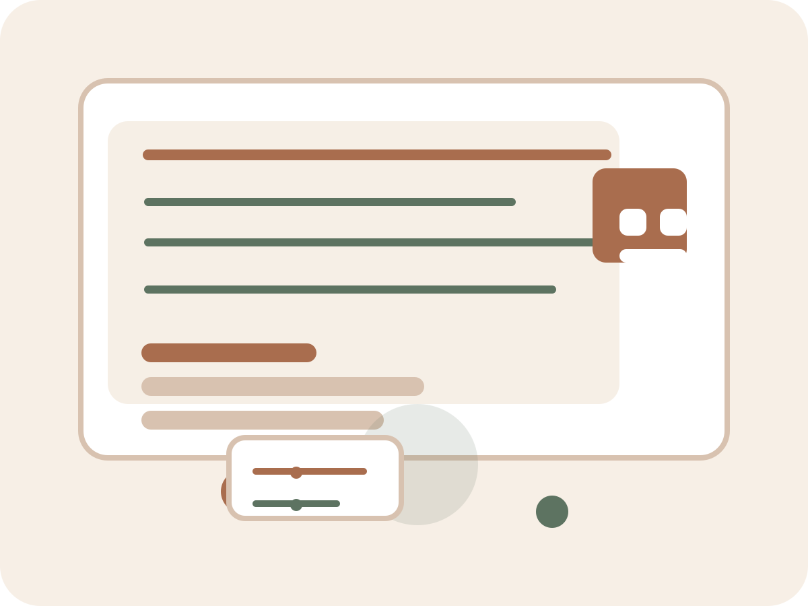

Made to breathe
We leave space for the eye and the mind. The page feels settled instead of overstimulated.
quiet digital work — made with care
Small, thoughtful experiences for people who want something calm, clear, and worth coming back to. No loud tricks. Just good pacing, warm details, and a feeling that someone truly cared.

We leave space for the eye and the mind. The page feels settled instead of overstimulated.
Every interaction is there for a reason, not just to impress. That makes the whole experience feel more honest.
Motion helps guide the story without grabbing the spotlight. It feels considered rather than loud.
We aim for pages that feel useful, warm, and easy to return to long after the first impression.
The details are simple, but they matter. That is usually where the character lives.
We build things with room to breathe so visitors can actually take in what matters.
We avoid the extra flourish that only looks busy. The result feels calmer and more trustworthy.
Accessibility is part of the design from the start, not something added near the end.
We begin with the mood, the message, and the people who will use it — not just the layout.
Then we work out what should feel easy to find, easy to read, and easy to trust.
Small moments of movement help guide attention without making the page feel overdesigned.
We test the details, adjust the rough edges, and make sure it still feels good on a quiet screen.